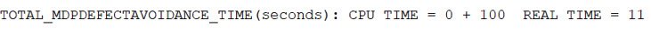

Log File
Calibre MDPDefectAvoidance activity output file
Calibre MDPDefectAvoidance generates a text file containing console outputs generated during its run.
A text log file named cal_mdpda.log is created in the current working directory per Calibre MDPview session. Console outputs generated during the session are appended to the log file. Once the session is closed and restarted, the older log file contents are overwritten with new session logs. Log files contain information that can help when debugging runtime issues or any other problems with the Calibre MDPDefectAvoidance run.
Though Calibre MDPDefectAvodiance generates the log file cal_mdpda.log in batch mode execution, it is recommended that you redirect the terminal log to a file at your desired location. The cal_mdpda.log files may not capture some messages output on the terminal window by Calibre MDPview during the start of a defect avoidance run. For example:
$MGC_HOME/bin/calibremdpv -remotefile remotes.crp -a da avoid params.txt | tee test.logIn this case, the test.log file includes the log messages output on the terminal window.
Format
A text file called cal_mdpda.log.
Parameters
- Header Information
Contains initial run information such as the product version, copyright, hardware configuration, and application start time.
Figure 1. Header Information- License Information
Contains the product licenses consumed to perform the defect avoidance run.
Figure 2. License Information- Command Line
Contains the command line executable used for the defect avoidance run.
Figure 3. Command Line- Remote Host Configuration
Contains the configuration options set for remote hosts for the defect avoidance run.
Figure 4. Remote Host Configurations
- Defect Avoidance Environment Variables
Lists all the environment variables set for the defect avoidance run. For example, the following environment variables are set before defect avoidance execution along with other environment variables required for various operations:
setenv CWB_SUPRESS_BANNER 0 setenv CWB_DISABLE_BANNER_SUPPRESSION 1These variables are listed in the log file section shown in the following figure.
Figure 5. Defect Avoidance Environment Variables- MTflex Remote Host Usage
Contains usage information on each remote host used by MTflex for the defect avoidance run. The following environment variable must be set to print RSS information.
setenv CALIBRE_ALWAYS_REPORT_RSS 1LVHEAP information is available in the primary host and remote logs of MTflex runs when the following parameters are set in the host configuration file for MTflex runs.
Figure 6. LVHEAP SettingsFigure 7. MTflex Remote Host UsageFor details on the logs generated by MTflex, refer to the Calibre Administrator’s Guide.
- Remote Host Summary
Summarizes the total usage of remote hosts used for the defect avoidance run.
Figure 8. Remote Host Summary- APP_END_TIME
Specifies the time the application run ends.
Figure 9. APP_END_TIME
Defect Avoidance Timers
A defect avoidance run logs CPU and REAL time taken by any operation. All the times reported are in seconds unless a different unit is explicitly specified. The printing of these timers is controlled by the LogLevel node setting in the Calibre MDPDefectAvoidance run configuration file.
- PARAM_FILE_PARSE_TIME
Specifies the time taken to parse the input parameter file.
Figure 10. PARAM_FILE_PARSE_TIME- CONFIG_FILE_PARSE_TIME
Specifies the time taken to parse the run configuration file.
Figure 11. CONFIG_FILE_PARSE_TIME- BLANK_FILE_PARSE_TIME
Specifies the time taken to parse an input blank inspection report file.
Figure 12. BLANK_FILE_PARSE_TIME- DESIGN_LOAD_TIME
Specifies the time taken to load a design file such as an OASIS file or a job deck in the primary host machine.
Figure 13. DESIGN_LOAD_TIME- SECTION_PROCESSING_TIME
In an MTflex run, the total query window (decided by shift x and y, defect size, and setbacks) is divided into smaller sections and each remote host processes only a small amount of data from all the defects. The number of sections is determined by the section’s x and y parameters specified in the defect avoidance parameter file.
For example, the window to process is specified as 200x200 um and the section’s x and y is set to 8x8. In that case, each remote machine processes only a 25x25 um region at a time from all defects. If the MTflex run is started with 64 cores, then all 25x25um windows are processed in parallel.
Figure 14. Defect Avoidance Section ProcessingThe SECTION_PROCESSING_TIME is the cumulative time taken by each remote to process a section. This time includes the time to query and process queried data for one section such a 25x25 um region.
Figure 15. SECTION_PROCESSING_TIME- QUERY_TIME
Specifies the time taken by the remote machine to query one section’s window data from the design for only one defect.
Figure 16. QUERY_TIME- TOTAL_MDPDEFECTAVOIDANCE_TIME
Specifies the cumulative time taken by a defect avoidance run, the exposed finder, HTML report generation, and OASIS report generation.
Figure 17. TOTAL_MDPDEFECTAVOIDANCE_TIME- EXPOSED_FINDER_TIME
Specifies the time taken to cross verify if a defect is overlapping with any pattern after applying the shifts resulting from a defect avoidance run.
Figure 18. EXPOSED_FINDER_TIME- HTML_REPORT_CREATION_TIME
Specifies the time taken to generate the HTML report. The report is generated inside the htmlreport directory in the output directory.
Figure 19. HTML_REPORT_CREATION_TIME- OASIS_WRITER_TIME
Specifies the time taken to generate an OASIS report. The report report.oas is located inside the output directory.
Figure 20. OASIS_WRITER_TIME